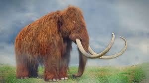
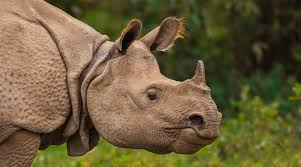

What Are Extinct Species?
Extinct species are those that no longer exist anywhere on Earth. These species have been lost forever due to a variety of factors, including environmental changes, human activity, and natural selection. The extinction of a species can have profound effects on the ecosystem, often causing a ripple effect that impacts other species. Studying extinct animals is vital to understanding past ecosystems and the reasons behind species extinction.
Dodo

Irish Elk
Mammoth
Indian Rhinoceros